8개 Lab의 정답과 실제 실행 화면
각 실습을 완료했을 때 확인할 결과를 모았습니다. 아래 이미지는 실습 코드를 Spike와 Verilator에서 실행한 뒤 결과 페이지를 브라우저로 연 실제 화면 캡처입니다. 실행한 소스와 판정·측정값은 실행 기록에 함께 보관합니다. 사이클 수는 아래 기준 환경의 관측값입니다. 컴파일러나 실행 조건을 바꾼 경우에는 자신의 측정값을 기록하세요.
내가 작성한 application도 실행할 수 있나요?
네. Lab 02부터 student/main.c를 작성하거나 수정해서 실행합니다. 하나의 ELF를 두 실행기에 넣고 정답 검사·결과 슬롯·완료 상태·콘솔 출력을 비교합니다.
나의 C / assembly 코드 → RISC-V GCC → 같은 program.elf
├─ Spike: ISA 기능 기준 결과
└─ Verilator: 교육용 RTL CPU 실행
+ cycles / 명령어 / RTL tracemake sw-sim SOURCE=student/main.c
make hw-sim SOURCE=student/main.c
make compare SOURCE=student/main.c이 실습의 대상은 저장소에 포함된 교육용 RV32IM CPU와 작은 C runtime을 사용하는 bare-metal 프로그램입니다. 정수 연산, 배열, 반복문, 함수, 제한된 printf와 정답 검사를 이용할 수 있습니다. 추가 라이브러리와 운영체제 서비스는 해당 실행 환경에 맞게 준비해야 합니다. Spike는 기능의 기준이고, 아래 성능·사이클·파형 관찰은 RTL 시뮬레이션에서 얻습니다. 공개 HTML은 안내와 참고 결과를 보여주며, 각자의 새 실행은 Linux 작업 환경에서 수행합니다.
| Lab | 정답 또는 완료 조건 |
|---|---|
| 01 | sum=22, xor=0x00000014; 4개 check 일치; smoke 17/17 |
| 02 | 기본 sum=36; 마지막 입력 8→10으로 바꾸면 sum=38 |
| 03 | 처음에는 actual 24 / expected 99로 FAIL; 수정하면 PASS |
| 04 | sum=36을 유지하면서 자신의 load·add·branch 실행을 cycle viewer에서 확인 |
| 05 | O0·O2 모두 sum(1..16)=136; 각각 ROI·CSR 측정값 기록 |
| 06 | 세 메모리 조건 모두 sum=36; 명령어 수를 유지하면서 지연·대기 관찰 |
| 07 | 입력/출력 이미지와 전체 pixel 기준값 일치; grayscale·Sobel 결과 확인 |
| 08 | 자신의 정답 검사와 두 backend 비교 PASS; 기준/변경 실험과 증거 패키지 보존 |
Lab 01
환경 확인과 첫 실행. 기본 arithmetic 예제는 두 backend에서 sum=22, xor=0x00000014를 출력합니다. check 1~4의 값은 각각 22, 12, 20, 68입니다. 모든 Actual/Expected가 일치하고 COMPARE PASS가 나와야 합니다. make test-smoke의 완료 조건은 17/17 expected outcomes이며, 실패 감지용 세 건이 의도대로 거부되는 것도 포함합니다.
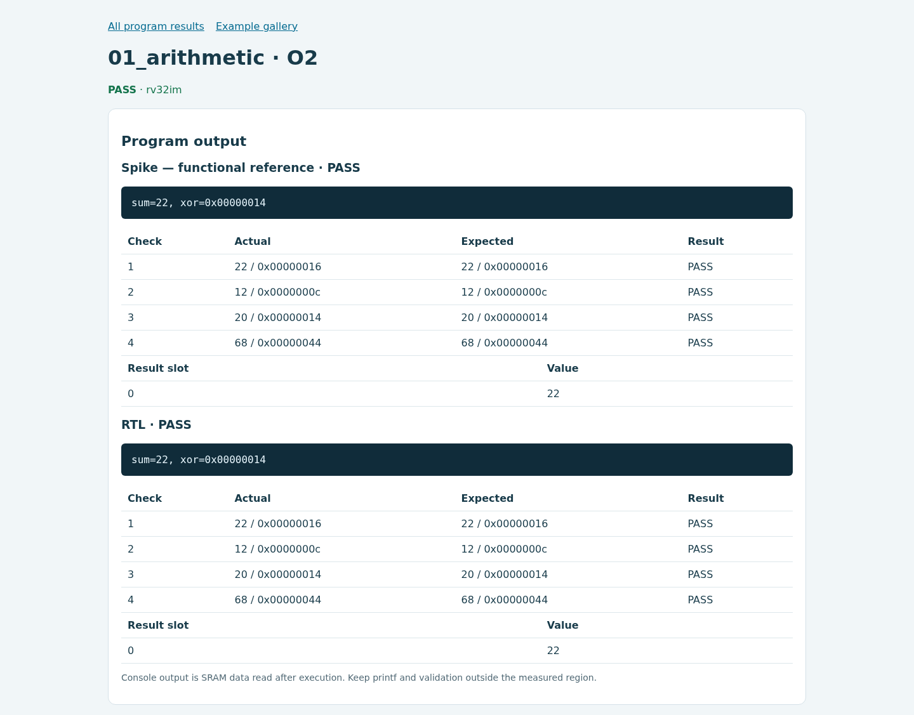
Lab 02
나의 첫 main(). 입력 {1,2,3,4,5,6,7,8}의 합은 36입니다. 콘솔 sum=36, check 201 PASS, result slot 0 = 36을 확인합니다. 마지막 입력을 10으로 바꾸고 예상값도 38로 고치면 sum=38이 나옵니다.
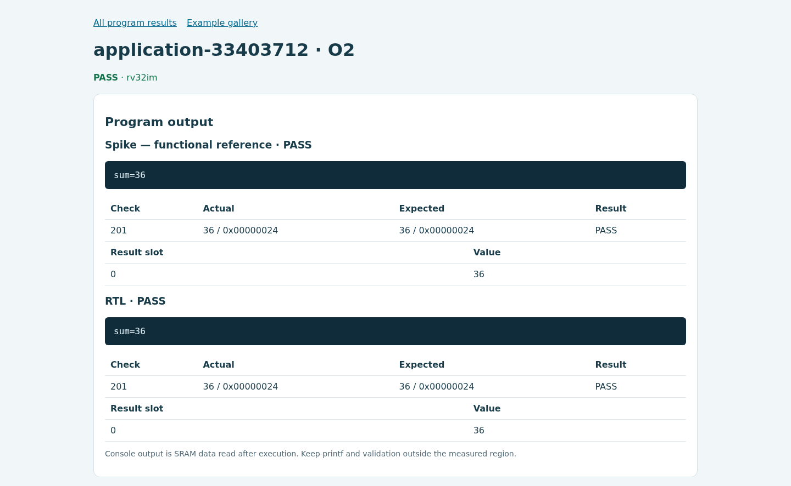

Lab 03
틀린 결과를 찾아 고치기. 최초 코드는 최댓값 24를 올바르게 구하지만 기대값을 99로 잘못 적었기 때문에 두 backend 모두 FAIL입니다. 아래의 빨간 판정이 이 단계에서 예상한 결과입니다. 비교 결과가 일치하더라도 틀린 정답 검사는 PASS가 되지 않습니다.
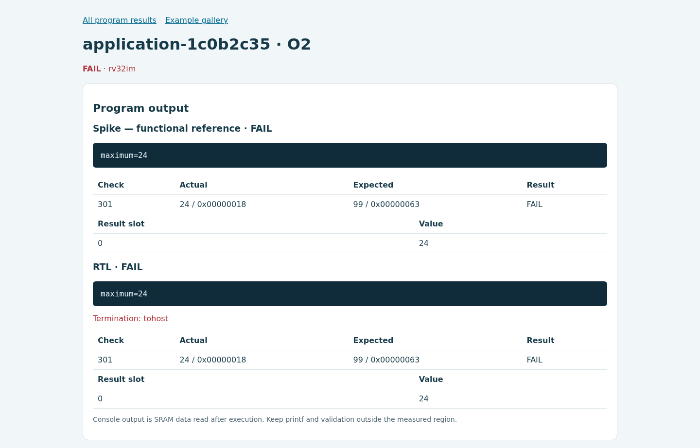
기대값을 24로 수정하면 PASS입니다. 다음 단계에서 마지막 입력을 30으로 바꾸면 정답은 30이며, 반복문에서 마지막 원소를 제외하는 오류를 넣으면 actual 24 / expected 30으로 실패해야 합니다. 원래 반복문으로 복구하면 30으로 통과합니다.
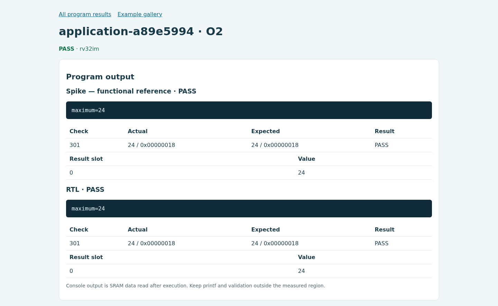
Lab 04
명령어와 CPU 실행 관찰. Lab 02의 합계 36과 PASS를 그대로 유지하면서 프로그램을 등록합니다. 화면에서 자신의 sum_values 함수의 명령어·PC·load 요청·실행 상태·retirement를 관찰합니다. 선택한 사이클은 참고 장면이며, 모든 학생이 같은 PC나 같은 사이클을 선택할 필요는 없습니다.
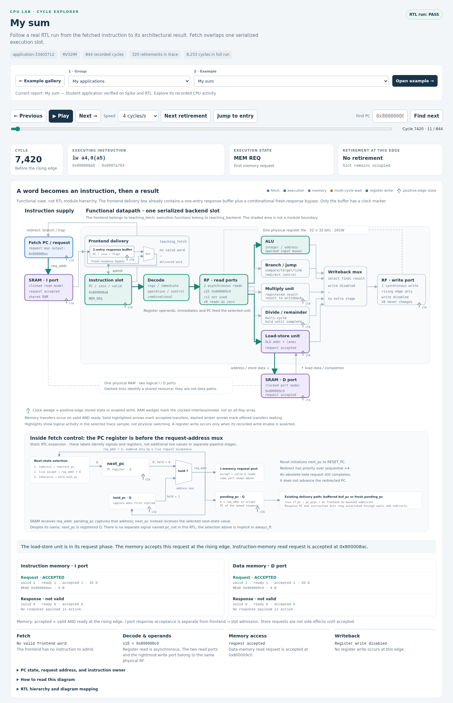
Lab 05
성능 개선을 측정하기. 수업 starter는 1부터 16까지의 합 136을 계산합니다. O0·O2의 check 501과 전체 기능 결과가 모두 통과해야 합니다. lab_perf_begin/end의 CSR 구간과 lab_roi_begin/end의 RTL marker ROI는 경계가 다르므로 측정값을 별도 열에 기록합니다.
| 설정 | 정답 | ROI cycles | ROI retired | ROI CPI | CSR cycles / retired |
|---|---|---|---|---|---|
| O0 | 136 · PASS | 634 | 262 | 2.420 | 1,027 / 436 |
| O2 | 136 · PASS | 186 | 83 | 2.241 | 254 / 112 |
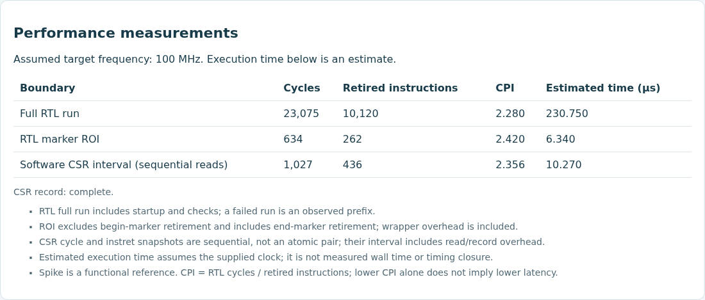
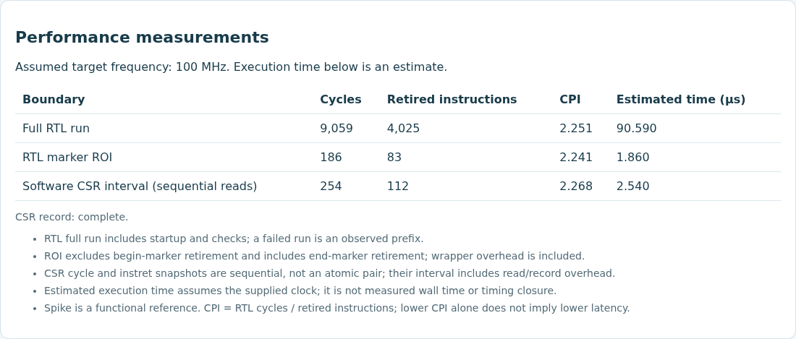
화면의 100 MHz는 시간 환산용 가정입니다. 이 실습에서 관측한 것은 RTL cycles와 retired instructions이며, 실제 칩 주파수나 물리 구현 성능을 검증한 값은 아닙니다.
Lab 06
메모리가 느려지면?. 원래 합계 프로그램과 O2 설정을 유지하고 fast, latency3, stress(seed 11)만 바꿉니다. 세 조건에서 정답 36, 전체 기능 signature와 ROI 명령어 수를 확인한 뒤 cycles를 비교합니다.
| 메모리 | 정답 | ROI cycles | ROI retired | ROI CPI |
|---|---|---|---|---|
| fast | 36 · PASS | 114 | 51 | 2.235 |
| latency3 | 36 · PASS | 218 | 51 | 4.275 |
| stress · seed 11 | 36 · PASS | 435 | 51 | 8.529 |
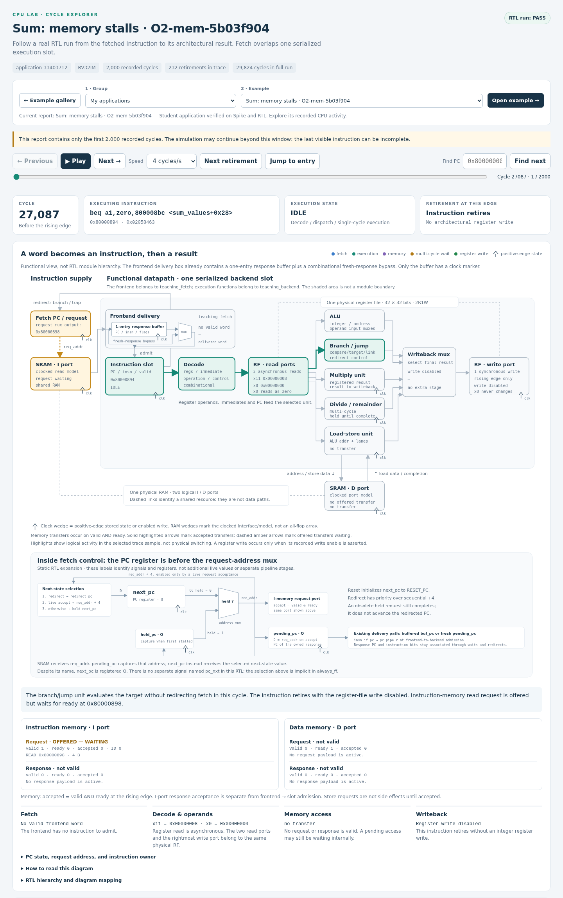
선택한 cycle 27087은 합계 프로그램의 ROI 안에서 instruction fetch 요청이 ready를 기다리는 시점입니다. 메모리 지연은 데이터 load뿐 아니라 명령어 공급에도 영향을 줍니다.
소문자 q/r는 ready를 기다리는 offered transfer, 대문자 Q/R는 수락된 transfer입니다. 요청을 내는 시점, 수락되는 시점과 응답 시점을 나누어 관찰하세요.
Lab 07
눈에 보이는 이미지 처리. 필수 첫 입력은 7×5이고 다음 실험은 16×12입니다. copy, grayscale, Sobel, pipeline의 실제 출력 전체를 기준값과 비교합니다. 화면의 컬러 입력과 회색 출력은 해당 프로그램이 dump한 buffer입니다.
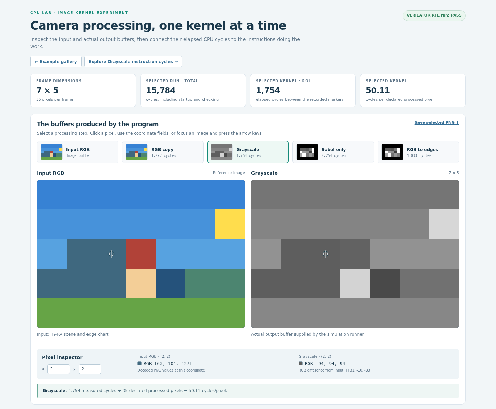
한 픽셀의 정답은 (77*R + 150*G + 29*B + 128) >> 8로 계산합니다.
위 화면의 좌표 (2, 2)에서는 입력 RGB가 (63, 104, 127)이며, 식으로 계산한 값은 94입니다. 실제 출력 RGB도 (94, 94, 94)입니다.
16×12 실제 영상 처리 화면. 선택 실습의 denoise·cartoon·ball은 64×48로 별도 실행했습니다. ball의 FRAME=24는 장면 번호입니다.

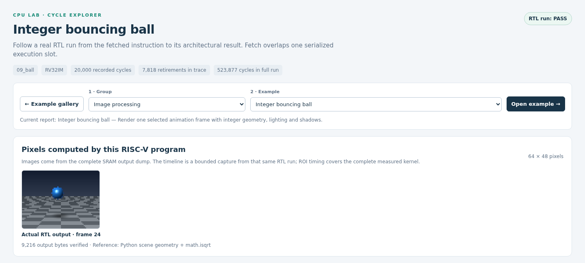
Lab 08
재현 가능한 나의 프로젝트. 이 Lab에는 모두에게 동일한 숫자나 필수 속도향상 비율이 없습니다. 자신이 정한 입력과 정답 검사를 통과하고, 한 가지 변경의 효과를 근거로 설명하면 됩니다. 아래 참고 실험은 같은 합계 소스·입력· 메모리 조건에서 컴파일 옵션만 O0→O2로 바꿨습니다. 두 결과의 정답은 모두 36입니다.
| 버전 | 바꾼 조건 | 정답 | ROI cycles | ROI retired | ROI CPI |
|---|---|---|---|---|---|
| 기준 | O0 | 36 · PASS | 362 | 150 | 2.413 |
| 변경 | O2 | 36 · PASS | 114 | 51 | 2.235 |
이 참고 실험의 cycle speedup은 3.18×입니다. 알고리즘은 바꾸지 않았으며 이 수치는 학생 프로젝트의 필수 목표가 아닙니다.
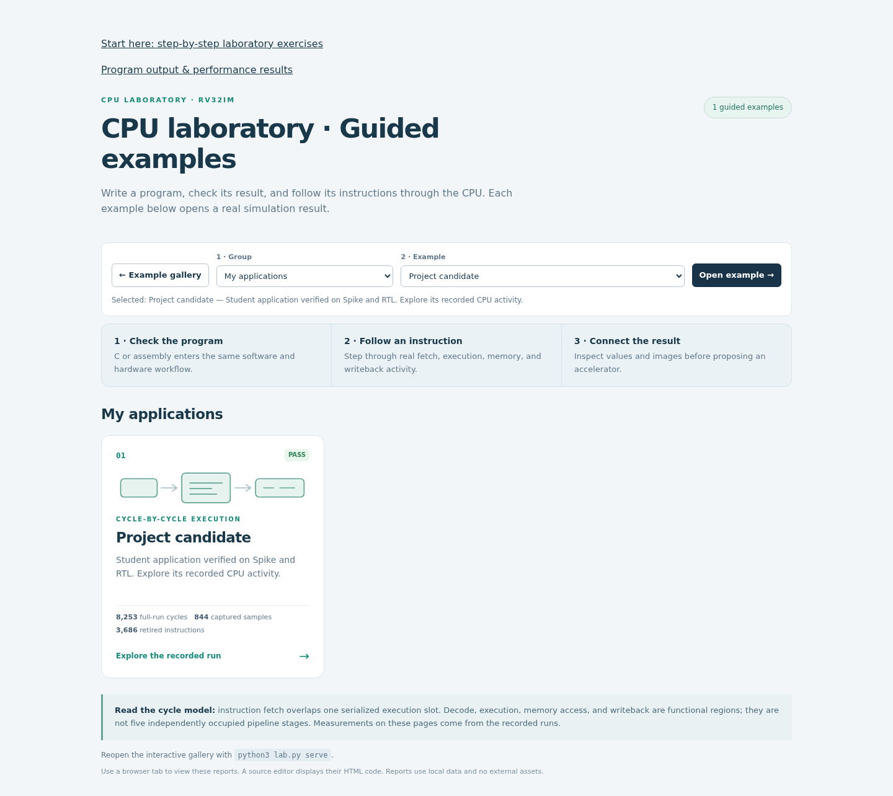
각 버전의 source, ELF hash, build.json, result.json, performance.json, 명령어 기록과 trace를 함께 보관합니다. make export-views로 만든 cpu_lab_examples.zip을 실제로 풀어 참고 화면의 offline gallery를 확인했습니다. 이 ZIP은 viewer 공유용이므로 제출할 소스와 입력은 별도로 포함해야 합니다.
측정 환경과 재현
실행 기록 시각(UTC): 2026-10-15T00:55:36.133432+00:00. 공개 코드 기준 commit은 7401d22입니다.
g++ (GCC) 13.2.1 20231205 (Red Hat 13.2.1-6)
Python 3.11.13
riscv32-unknown-elf-gcc (GCC) 15.2.0
Spike RISC-V ISA Simulator 1.1.1-dev
Verilator 5.028 2024-08-21 rev v5.028
새로 컴파일한 RTL simulator를 이용했고, 격리된 소스 사본은 실행 전후에 동일했습니다. 의도한 실패 두 건도 예상한 실패로 확인했습니다. 공개된 PNG는 실제 결과 페이지의 화면 영역을 캡처했으며 raw 로그·개인 경로는 포함하지 않습니다.
이 자료는 application 실행과 결과 관찰을 설명하는 참고 기록입니다. RTL 논리와 시뮬레이션 runtime은 변경하지 않았습니다. 다른 코어를 선택하는 실습에서는 그 코어의 별도 기능·합성·형식 검증 기록을 확인해야 합니다.
Source: docs/expected-results.md. This manual also works offline. Measurements appear only after you run the experiments.